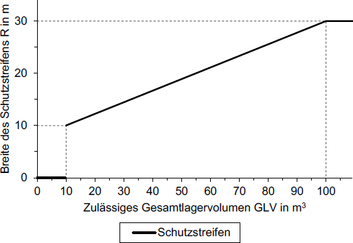

(1) Bei der Lagerung von entzündbaren Flüssigkeiten gemäß Tabelle 9 in den dort genannten Mengen sind zusätzliche Maßnahmen gemäß dieses Abschnitts 12 anzuwenden.
Tabelle 9: Anwendungsbereich von Abschnitt 12 in Abhängigkeit von Art und Einstufung der Gefahrstoffe und ihrer Nettolagermenge
CLP-Verordnung | ||
| entzündbare Flüssigkeiten, Kat. 1, 2 | H224, H225 | > 200 kg |
| entzündbare Flüssigkeiten, Kat. 3 | H2269 | > 1.000 kg |
| 9 | Bei der ausschließlichen Lagerung von entzündbaren Flüssigkeiten mit einem Flammpunkt > 55 °C kann auf die Festlegung der zusätzlichen Schutzmaßnahmen gemäß Abschnitt 12 verzichtet werden. Das trifft insbesondere auf Dieselkraftstoff und Heizöl zu. |
(2) Restentleerte, ungereinigte Behälter sind hinsichtlich der Schutzmaßnahmen wie gefüllte Behälter zu betrachten.
(3) Werden Flüssigkeiten in Sicherheitsschränken gemäß Anhang 1 gelagert, gelten die Anforderungen dieses Abschnitts 12 als erfüllt.
(1) In einem Lagerraum dürfen ortsbewegliche Behälter ohne über diesen Abschnitt 12 hinausgehende Schutzmaßnahmen mit einer Gesamtlagermenge von höchstens 100 t aufgestellt sein. Dabei sind auch die Nettolagermengen des entzündbaren Inhalts von Druckgaskartuschen und Aerosolpackungen zu berücksichtigen. Sollen in einem Lagerraum mehr als 100 t gelagert werden, ist im Rahmen der Gefährdungsbeurteilung festzulegen, ob über diesen Abschnitt 12 hinausgehende Schutzmaßnahmen erforderlich sind.
(2) Werden ortsbewegliche Behälter in einem Lagerraum zusammen mit ortsfesten Tanks gelagert, darf die Gesamtlagermenge von 150 t ohne weitere Maßnahmen nicht überschritten werden.
(3) Werden entzündbare Flüssigkeiten zusammen mit brennbaren Flüssigkeiten mit Flammpunkten von mehr als 60 °C und bis zu 100 °C gelagert, so sind die Mengen der brennbaren Flüssigkeiten mit in die Gefährdungsbeurteilung einzubeziehen. Dabei dürfen 5 kg brennbare Flüssigkeiten entsprechend 1 kg entzündbare Flüssigkeiten angesetzt werden.
(4) Für die Bestimmung der zulässigen Lagermengen im Sinne dieses Abschnitts 12.2 beträgt die anzusetzende Lagermenge abweichend von Abschnitt 12.1 Absatz 2 bei restentleerten Behältern 0,5 % des Fassungsvermögens der Behälter, da vorausgesetzt wird, dass die Restmengen in diesen Behältern weniger als 0,5 % ihres Fassungsvermögens betragen.
(1) Lagerräume müssen von anderen Räumen gegen Brandübertragung gesichert abgetrennt sein.
(2) Wände, Decken und Türen von Lagerräumen müssen aus nichtbrennbaren Baustoffen bestehen.
(3) Lagerräume für
müssen von angrenzenden Räumen feuerhemmend, darüber hinaus feuerbeständig abgetrennt sein.
(4) Durchbrüche durch Wände und Decken, die in angrenzende Räume führen, müssen durch Schottungen in der Feuerwiderstandsdauer der durchbrochenen Wand bzw. Decke gegen Brandübertragung gesichert sein. Abweichend hiervon müssen Türen in den feuerbeständigen Wänden nur feuerhemmend sein, wenn die angrenzenden Räume in ein Brandschutzkonzept einbezogen sind.
(5) Rückhalteeinrichtungen müssen für die gelagerten Flüssigkeiten undurchlässig sein und aus nichtbrennbaren Baustoffen bestehen.
(6) Abläufe, Öffnungen und Durchführungen zu tiefer gelegenen Räumen, Kellern, Gruben, Schächten sowie Kanäle, z. B. für Kabel oder Rohrleitungen, müssen gegen das Eindringen der Flüssigkeiten und deren Dämpfe geschützt sein.
(7) Schornsteine müssen in den Lagerräumen den an feuerbeständige Wände zu stellenden Anforderungen entsprechen und von außen verputzt sein. Die Schornsteine dürfen innerhalb der Lagerräume keine Öffnungen haben, auch wenn sie durch Schieber, Klappen oder in anderer Weise verschließbar sind.
(8) Die Lagerräume dürfen nicht anderweitig genutzt werden.
(9) Lagerräume dürfen nicht an Wohnräume und Räume grenzen, in denen Personen bestimmungsgemäß schlafen können.
(10) Lagerräume zur Lagerung von mehr als 10 t dürfen auch nicht an Räume grenzen, die dem nicht nur vorübergehenden Aufenthalt von anderen Personen als dem Lagerpersonal, dienen. Als Lagerpersonal gelten alle im Zusammenhang mit der Lagerung der Flüssigkeiten beschäftigten Personen.
(11) Abweichend von Absatz 10 dürfen Lagerräume nur dann an Aufenthalts- oder Arbeitsräume grenzen, die nicht nur von Lagerpersonal benutzt werden, wenn sie von diesen Räumen
(12) Abweichungen von den Absätzen 9 bis 11 sind im Ergebnis der Gefährdungsbeurteilung und in Abstimmung mit der Feuerwehr zulässig, wenn die Alarmierung der Personen in diesen Räumen bei Produktleckagen oder Brand durch automatische Brandmeldeanlagen sichergestellt ist.
(13) Räume zur Lagerung von mehr als 10 t und bis zu 20 t sind mit einer automatischen Brandmeldeanlage auszurüsten, wenn dies gemäß Gefährdungsbeurteilung aufgrund besonderer örtlicher oder betrieblicher Gegebenheiten (z. B. nahe Wohnbebauung) erforderlich ist.
(14) Räume zur Lagerung von mehr als 20 t entzündbarer Flüssigkeiten sind mit einer automatischen Feuerlöschanlage auszurüsten, Abschnitt 6.2 Absatz 13 gilt entsprechend.
(1) Brandschutzabstände sind erforderlich, um benachbarte Anlagen und Gebäude gegen die Einwirkung eines Brandes im Lager zu schützen.
(2) Bei einer Gesamtlagermenge von mehr als 200 kg und weniger als 1.000 kg müssen ortsbewegliche Behälter mindestens 5 m von Gebäuden entfernt sein. Bei einer Gesamtlagermenge ab 1000 kg müssen ortsbewegliche Behälter mindestens 10 m von Gebäuden entfernt sein. Die geforderten Brandschutzabstände beziehen sich auf den Rand der ortsbeweglichen Behälter. Ist deren Position nicht eindeutig festgelegt, sind die Brandschutzabstände nach Satz 1 und 2 vom Rand der Rückhalteeinrichtung einzuhalten.
(3) Die Brandschutzabstände nach Absatz 2 können entfallen, wenn mindestens eine der drei folgenden Nummern erfüllt ist:
(4) Bei der Lagerung von restentleerten Behältern gelten Absatz 2 und 3 sinngemäß, wobei die anzusetzende Lagermenge 0,5 % des Fassungsvermögens der Behälter beträgt, da vorausgesetzt wird, dass die Restanhaftungen/-inhalte dieser Behälter weniger als 0,5 % ihres Fassungsvermögens betragen.
(1) Schutzstreifen sind Abstände, die dazu dienen, eine Brandübertragung von benachbarten Einrichtungen zum Lager für entzündbare Flüssigkeiten hin zu vermeiden.
(2) Für die Ermittlung der Notwendigkeit eines Schutzstreifens wird der gesamte Inhalt der Behälter zugrunde gelegt, die in einer Rückhalteeinrichtung gemäß Abschnitt 12.5 vorhanden sein können. Dies ist das für die weitere Bemessung zugrunde zu legende zulässige Gesamtlagervolumen. Unmittelbar benachbarte Rückhalteeinrichtungen für ortsbewegliche Behälter gelten hinsichtlich der Notwendigkeit von Schutzstreifen als eine Rückhalteeinrichtung, wenn nicht durch brandschutztechnische Maßnahmen eine gegenseitige Beeinflussung der Rückhalteeinrichtungen im Brandfall verhindert wird. Dies ist z. B. der Fall, wenn der Abstand zwischen benachbarten Rückhalteeinrichtungen weniger als 10 m beträgt.
(3) Benachbarte Rückhalteeinrichtungen müssen von einem gemeinsamen Schutzstreifen umgeben sein, wenn der Schutzstreifen einer Rückhalteeinrichtung in eine benachbarte Rückhalteeinrichtung für ortsbewegliche Behälter hineinreicht, die einzeln betrachtet keinen Schutzstreifen benötigt.
(4) Abweichend von Absatz 3 kann auf einen gemeinsamen Schutzstreifen verzichtet werden, wenn die benachbarten Rückhalteeinrichtungen durch eine feuerbeständige Wand ausreichender Breite und Höhe getrennt sind.
(5) Für die Schutzstreifen muss das Gelände zur Verfügung stehen, auf dem die vorgeschriebenen Anforderungen eingehalten werden können. Soweit nicht ausschließlich betriebseigenes Gelände für die Schutzstreifen zur Verfügung steht, hat der Anlagenbetreiber durch rechtsverbindliche Vereinbarungen sicherzustellen, dass die für Schutzstreifen geltenden Anforderungen erfüllt werden. Seen, Flüsse, Kanäle sowie nichtöffentliche Gleisanlagen und Straßen dürfen in die Schutzstreifen einbezogen werden.
(6) Für die Bemessung der Breite des Schutzstreifens wird das zulässige Gesamtlagervolumen zugrunde gelegt, das in einer Rückhalteeinrichtung vorhanden sein darf. Bei restentleerten Behältern beträgt das anzusetzende Lagervolumen 0,5 % des Fassungsvermögens der Behälter, da vorausgesetzt wird, dass die Restanhaftungen/-inhalte dieser Behälter weniger als 0,5 % ihres Fassungsvermögens betragen.
(7) Die Breite des Schutzstreifens R wird gemäß Tabelle 10 in Abhängigkeit vom zulässigen Gesamtlagervolumen festgelegt.
Tabelle 10: Breite des Schutzstreifens R in Abhängigkeit vom zulässigen Gesamtlagervolumen GLV
| 10 m3 < GLV ≤ 100 m3 | |
| 100 m3 < GLV |
Abbildung 1 zeigt grafisch den Zusammenhang zwischen Breite des Schutzstreifens und dem zulässigen Gesamtlagervolumen.

Abbildung 1 Breite des Schutzstreifens R in Abhängigkeit vom zulässigen Gesamtlagervolumen GLV
(8) Abweichend von Absatz 5 kann der Schutzstreifen an feuerbeständigen Wänden oder Wällen ausreichender Höhe und Breite enden. Die Wände oder Wälle dürfen dann ganz oder teilweise gleichzeitig auch die Wände oder Wälle der Rückhalteeinrichtung sein.
(9) Die Schutzstreifen sind von Gefahrstoffen und Materialien (z. B. Stapel mit Holzpaletten, Schrumpffolien, Umverpackungen, Grasschnitt) freizuhalten, die ihrer Art oder Menge nach geeignet sind, zur Entstehung oder Ausbreitung von Bränden zu führen. Nicht zu den Gefahrstoffen und Materialien nach Satz 1 gehören angelieferte oder für den Versand fertig gestellte Transporteinheiten wie IBC oder Holzpaletten, beladen mit entzündbaren Flüssigkeiten in ortsbeweglichen Behältern einschließlich ihrer Verpackungen und ihrer Lager- oder Transporthilfsmittel (z. B. Paletten, Schrumpffolien, Umverpackungen zur Transportsicherung).
(1) Lagerbehälter müssen in Rückhalteeinrichtungen aufgestellt sein. Die Rückhalteeinrichtungen müssen gegen die gelagerten Flüssigkeiten ausreichend beständig sein und für die Dauer der zu erwartenden Beaufschlagung mit ausgelaufenem Lagergut auch im Brandfall flüssigkeitsundurchlässig sein. Dies gilt als erfüllt, wenn die verwendeten Baustoffe und Bauteile dem jeweiligen bauaufsichtlichen Verwendbarkeitsnachweis entsprechen, in dem die Verwendung im Brandfall auch berücksichtigt ist. Die zu Grunde zu legende Brandeinwirkungsdauer muss mindestens den Anforderungen an die Raumumfassungsbauteile entsprechen. Die folgenden Mindestanforderungen sind einzuhalten:
Sie können durch Vertiefungen, Schwellen, Wände oder Wälle gebildet werden. Wände und Fußböden dürfen auch Teile des Lagerraumes sein. Die Standsicherheit von Rückhalteeinrichtungen ist nachzuweisen.
(2) Rückhalteeinrichtungen in Räumen müssen grundsätzlich nach oben offen sein (keine Verdämmung, ausreichende Belüftung) und dürfen keine Abläufe haben. Eine offene Rückhalteinrichtung ist bei der Zoneneinteilung explosionsgefährdeter Bereiche zu berücksichtigen. Wird eine Rückhalteeinrichtung nach oben abgedichtet, ist die eingeschränkte Belüftung bei der Festlegung der Schutzmaßnahmen zu berücksichtigen.
(3) Das Rückhaltevolumen von Rückhalteeinrichtungen ist so zu bemessen, dass sich das Lagergut im Gefahrenfall nicht über die Rückhalteeinrichtung hinaus ausbreiten kann. Dies ist erfüllt, wenn das Fassungsvermögen der Rückhalteeinrichtung mindestens den in Tabelle 11 angegebenen Werten in Abhängigkeit vom zulässigen Gesamtlagervolumen entspricht.
Tabelle 11: Erforderliches Rückhaltevolumen in Abhängigkeit vom zulässigen Gesamtlagervolumen GLV
| 10 | |
| 100 m3 < GLV ≤ 1000 m3 | 3 (mindestens aber 10 m3) |
| 1000 m3 < GLV | 2 (mindestens aber 30 m3) |
(4) Abweichend von Absatz 3 muss bei der Lagerung von Schwefelkohlenstoff das Fassungsvermögen der Rückhalteeinrichtung mindestens dem Gesamtfassungsvermögen aller in ihr aufgestellten Behälter entsprechen.
(5) Rückhalteeinrichtungen und Ableitflächen, die nicht aus feuerhemmenden oder feuerbeständigen Bauteilen hergestellt sind, müssen unterhalb der untersten Lagerebene angeordnet sein.
(6) In Lagerräumen und im Freien müssen Gebäudewände, die Rückhalteeinrichtungen begrenzen, in gesamter Höhe feuerbeständig sein.
(7) Wände von Rückhalteeinrichtungen dürfen mit Durchlässen für Rohrleitungen versehen sein, wenn hierdurch die Dichtheit der Rückhalteeinrichtung auch im Brandfall nicht beeinträchtigt wird.
(8) Ableitflächen müssen so gestaltet sein, dass austretende Flüssigkeit in die zugehörige Rückhalteeinrichtung abgeleitet wird. Sie müssen ausreichend beständig gegenüber einer kurzfristigen Beaufschlagung durch das Lagergut sein, brauchen aber nicht über Stunden oder Tage beständig sein.
(9) Rückhalteeinrichtungen im Freien müssen mit absperr- oder abschaltbaren Einrichtungen zur Entfernung von Wasser versehen sein und dürfen nur hierzu benutzt werden. Die Absperreinrichtungen müssen auch im Brandfall funktionsfähig sein. Abläufe sind grundsätzlich nicht zulässig. Verunreinigtes Wasser ist entsprechend den wasserrechtlichen Vorschriften zu behandeln.
(1) Es sind Maßnahmen zu treffen, die das Auftreten gefährlicher explosionsfähiger Atmosphäre weitgehend ausschließen. Kann nach den örtlichen oder betrieblichen Verhältnissen das Auftreten solcher Atmosphäre nicht verhindert werden, so sind explosionsgefährdete Bereiche im Sinne des Anhang I Nummer 1.6 GefStoffV festzulegen. Gemäß Anhang I Nummer 1.6 Absatz 3 der GefStoffV können diese Bereiche in Zonen eingeteilt werden. Die Beispielsammlung zur DGUV Regel 113-001 kann eine zusätzliche Erkenntnisquelle für die Einstufung explosionsgefährdeter Bereiche in Zonen sein. Zum Schutz vor Entzündung gefährlicher explosionsfähiger Atmosphäre sind Maßnahmen gemäß TRGS 723 und erforderlichenfalls zur Beschränkung der Auswirkungen einer Explosion gemäß TRGS 724 zu treffen. Werden MSR-Einrichtungen als Explosionsschutzmaßnahmen verwendet, wie z. B. Gaswarngeräte oder Überwachungen, ist die TRGS 725 zu berücksichtigen.
(2) Lager, die nicht die brandschutztechnischen Anforderungen nach Abschnitt 12.3 erfüllen und lediglich einen Wetterschutz darstellen (z. B. Profilblech), stehen hinsichtlich des Schutzes vor gegenseitiger Brandeinwirkung der Lagerung im Freien gleich. Maßnahmen zur Vermeidung von explosionsfähiger Atmosphäre (Lüftung) und zur Vermeidung von Zündquellen sind für solche Lager gemäß Abschnitt 12.6.2 festzulegen und umzusetzen.
(1) Lagerräume müssen zur Vermeidung der Ansammlung gefährlicher explosionsfähiger Atmosphäre ausreichend belüftet sein. Die Lüftung muss in Bodennähe wirksam sein. Nähere Konkretisierungen zu Lüftungsmaßnahmen finden sich in TRGS 722.
(2) In Lagerräumen für entzündbare Flüssigkeiten in Behältern mit einem Fassungsvermögen bis zu 1.000 l muss ein mindestens 0,4-facher Luftwechsel pro Stunde gewährleistet sein. Explosionsgefährdete Bereiche sind in Abhängigkeit von der Größe des Lagerraums wie folgt festzulegen:
(3) Sofern keine entzündbaren Flüssigkeiten der Temperaturklassen T5 und T6 und kein Diethylether gelagert werden, ist abweichend von Absatz 2 Nummer 2 eine Zoneneinteilung nicht erforderlich, wenn
Absatz 9 Satz 2 ist zu beachten.
(4) Abweichend von Absatz 2 sind Lagerräume kein explosionsgefährdeter Bereich, wenn gefahrgutrechtlich zulässige Transportbehälter so eingelagert werden, dass
(5) Abweichend von Absatz 2 sind Lagerräume für
kein explosionsgefährdeter Bereich, sofern die Flüssigkeiten bei der Lagerung nicht auf Temperaturen von mehr als 30 °C erwärmt werden können. Abweichend von Absatz 2 und 3 ist hinsichtlich des Explosionsschutzes keine Lüftung des Lagerraums erforderlich.
(6) Die Lüftung nach Absatz 2 kann durch natürliche oder technische Lüftung realisiert werden. Lagerräume nach Absatz 3 sind mit technischer Lüftung auszurüsten. Im Lager mit einer technischen Lüftung ist die Funktionsfähigkeit der Lüftung zu überwachen (z. B. durch Strömungswächter), soweit keine ausreichende Bewertung der Verfügbarkeit der Lüftung entsprechend TRGS 725 vorliegt.
(7) Für eine Gaswarneinrichtung nach Absatz 3 Nummer 1 ist ein Nachweis zu führen, dass die Entstehung einer explosionsfähigen Atmosphäre rechtzeitig und zuverlässig erkannt wird. Anforderungen an Gaswarneinrichtungen finden sich in TRGS 722.
(8) In Lagerräumen für entzündbare Flüssigkeiten in Behältern mit einem Fassungsvermögen von mehr als 1.000 l sind die Anforderungen an die Lüftung und die Zoneneinteilung im Rahmen der Gefährdungsbeurteilung festzulegen.
(9) Für die Auswahl von Geräten zur Verwendung in Bereichen, die in Zonen eingeteilt sind, gilt TRGS 723. In Lagerräumen nach Absatz 3 müssen zusätzlich bis zu einer Höhe von 0,8 m über Erdgleiche alle fest installierten Betriebsmittel der Gerätekategorie 3 G im Sinne der Richtlinie 2014/34/EU entsprechen.
(10) In Lagerräumen gemäß Absatz 2 darf abweichend von Absatz 9 auf den Einsatz von Betriebsmitteln der Gerätekategorie 3 G verzichtet werden, wenn nach Ansprechen einer fest installierten Gaswarneinrichtung gemäß Absatz 7 im Gefahrenfall unverzüglich alle nicht geeigneten Betriebsmittel stillgesetzt und alle Zündquellen unwirksam gemacht werden. Unabhängig von Satz 1 müssen bis zu einer Höhe von 0,8 m über Erdgleiche alle fest installierten Betriebsmittel, deren Zündquellen sich nicht wirksam abschalten lassen (z. B. heiße Oberflächen), mindestens der Gerätekategorie 3 G entsprechen.
(11) In Nachbarräumen bzw. -bereichen, die über Öffnungen mit explosionsgefährdeten Bereichen in Verbindung stehen oder gebracht werden können, sind ggf. explosionsgefährdete Bereiche festzulegen.
(12) Ergeben sich explosionsgefährdete Bereiche auch außerhalb der Lagerräume, muss hierfür das Gelände zur Verfügung stehen, auf dem die erforderlichen Schutzmaßnahmen durchgeführt werden können.
(1) Läger für ortsbewegliche Behälter müssen zur Vermeidung der Ansammlung gefährlicher explosionsfähiger Atmosphäre ausreichend belüftet sein. Im Freien ist in der Regel die natürliche Lüftung ausreichend.
(2) Bei der Lagerung entzündbarer Flüssigkeiten in ortsbeweglichen Behältern im Freien sind Rückhalteeinrichtungen und dazugehörige Ableitflächen bis zu einer Höhe von 0,2 m über deren Oberkante hinaus explosionsgefährdeter Bereich und in Zone 2 einzuteilen.
(3) Außerhalb einer Rückhalteeinrichtung im Freien ist der Bereich bis zu einer Höhe von 0,2 m über Erdgleiche bis zu einem Abstand von 2 m von der Rückhalteeinrichtung explosionsgefährdeter Bereich und in Zone 2 einzuteilen.
(4) Für die Auswahl von Geräten zur Verwendung in explosionsgefährdeten Bereichen gilt TRGS 723.
(5) Abweichend von den Absätzen 2 und 3 sind Rückhalteeinrichtungen und Ableitflächen im Freien kein explosionsgefährdeter Bereich, wenn gefahrgutrechtlich zulässige Transportbehälter so eingelagert werden, dass
(6) Für explosionsgefährdete Bereiche außerhalb des Lagerbereichs muss das Gelände zur Verfügung stehen, auf dem die erforderlichen Schutzmaßnahmen durchgeführt werden können.